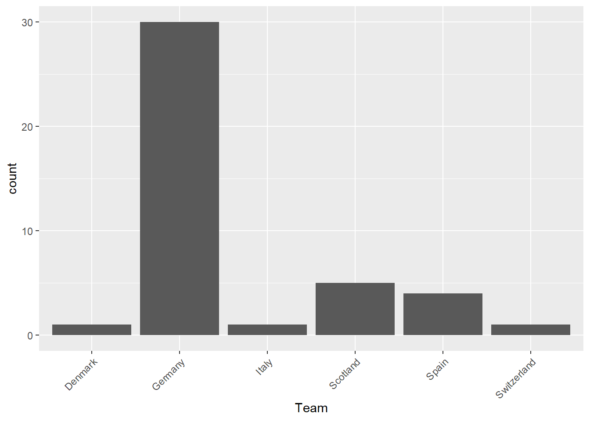
Knowledge is power, and points.
There are 15 questions in the game, and some of them have already been decided.
Which team scores the first goal in the tournament? [Decided]
The answer was Germany, as most of us guessed.
Who will be top scorer in EURO2024?
[1] "LC_COLLATE=Norwegian Bokmål_Norway.utf8;LC_CTYPE=Norwegian Bokmål_Norway.utf8;LC_MONETARY=Norwegian Bokmål_Norway.utf8;LC_NUMERIC=C;LC_TIME=Norwegian Bokmål_Norway.utf8"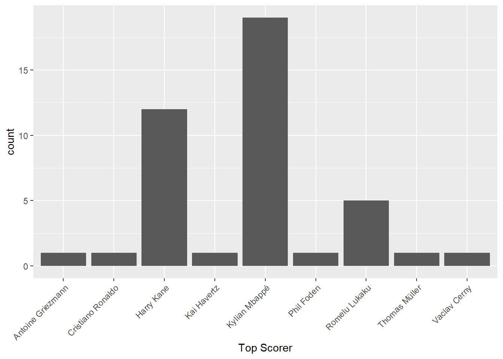
The modal answer is Kylian Mbappé, but Harry Kane is also a popular choice, with Lukaku in thrid.
Havertz and Kane have two each, Mbappé has one, and the rest have none. Mikautadze, Musiala and Schranz have all three goals each, but only Musiala is likely to add to that tally.
As it stands, we gain no points from this question
Who will be assist king in EURO2024?
[1] "LC_COLLATE=Norwegian Bokmål_Norway.utf8;LC_CTYPE=Norwegian Bokmål_Norway.utf8;LC_MONETARY=Norwegian Bokmål_Norway.utf8;LC_NUMERIC=C;LC_TIME=Norwegian Bokmål_Norway.utf8"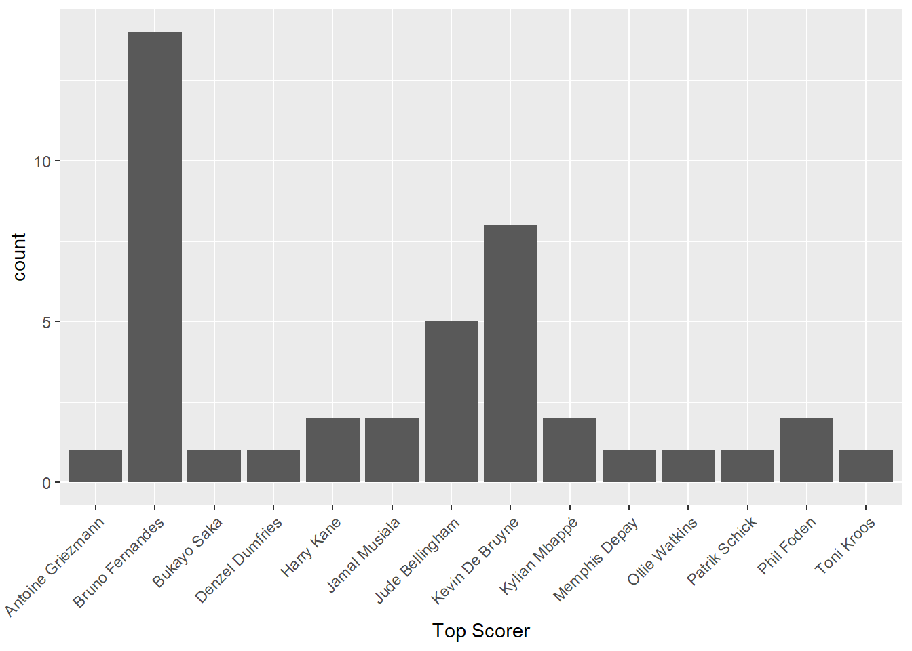
More variation in these answers, but Bruno Fernandes is the most popular choice, followed by De Bruyne and Bellingham. There is a grand total of 48 entries in the assist list, for a total of 55 assists, but none of the individuals listed above have contributed any of them.
As it stands, no points are gained from this question.
Will Harry Kane score on penalty (not penalty shootout)?
We don’t know yet. There hasn’t been too many penalties in the tournament, and Kane has not taken any of them, but the possibility remains.
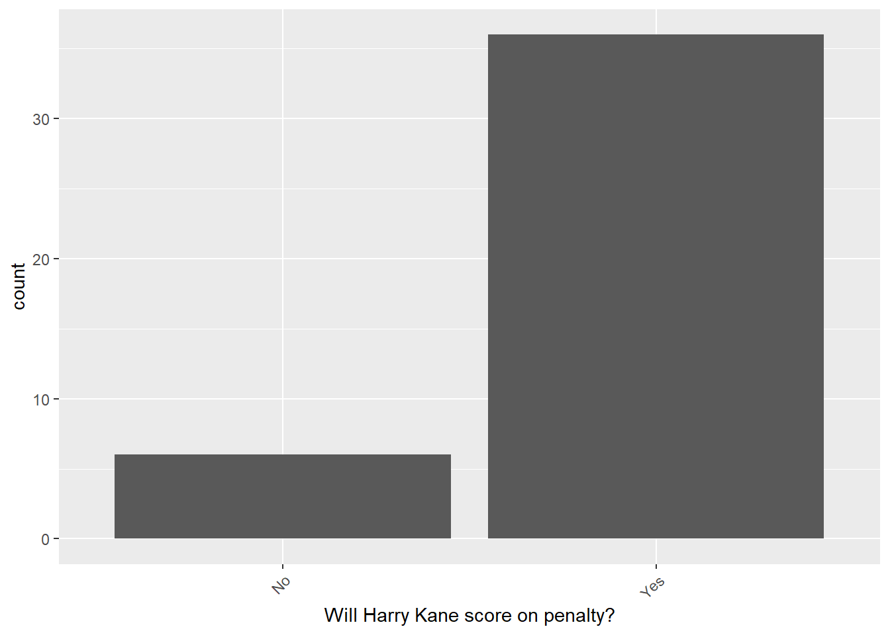
A large majority of us believe that Kane will score on penalty.
Will Ronaldo score at all?
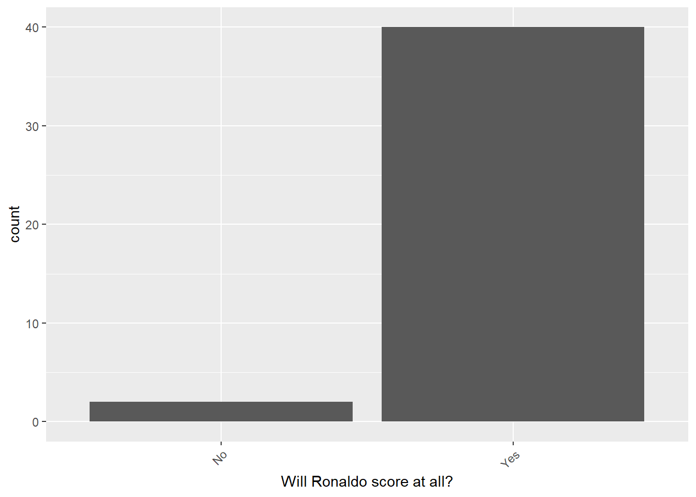
Except for two dissidents, we all think that Ronaldo will score. But he hasn’t yet.
In the last EURO there was 6 red cards. Will there be more in this championship?
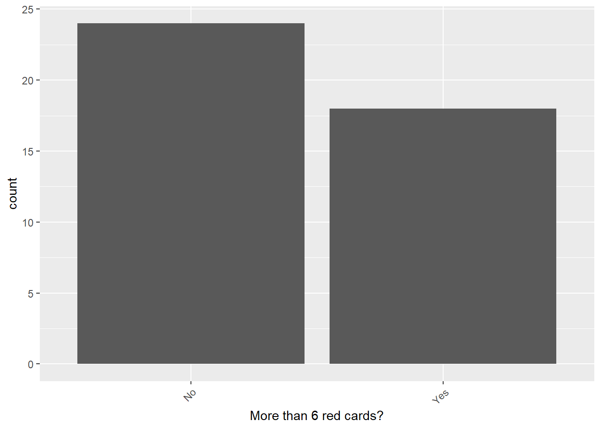
A much more interesting question. So far we have seen the back of three sinners. Will there be another four? We hasten to point out that only individuals on the pitch counts. If a coach or a player on the bench is sent off, it doesn’t count.
In EURO2021 there was 9 own goals. Will there be more in this championship?
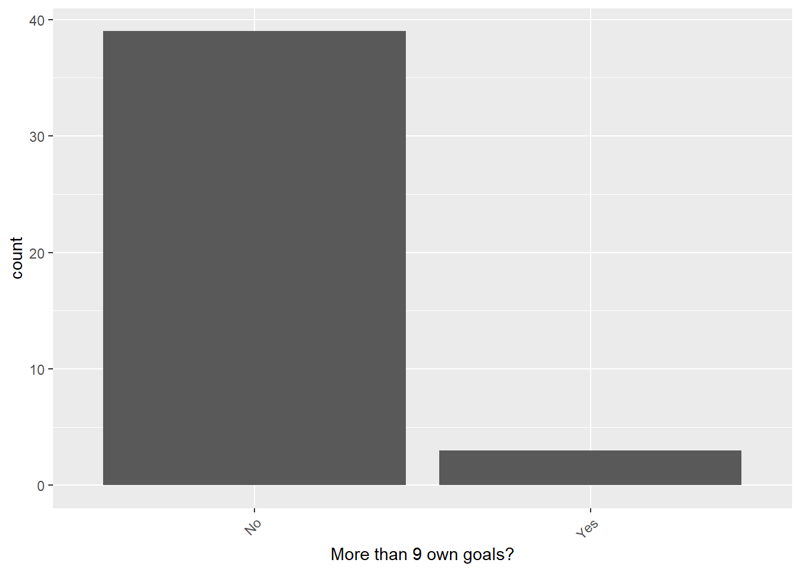
Again our collective wisdom was more unanimous than wise. Sverke, Jacob og Lærke foresaw the avalanche of own goals that was to come. As far as I can tell, mr. Le Normand was number eight so far. At this pace, two more seems not unlikely.
Will the final end in a penalty shootout?
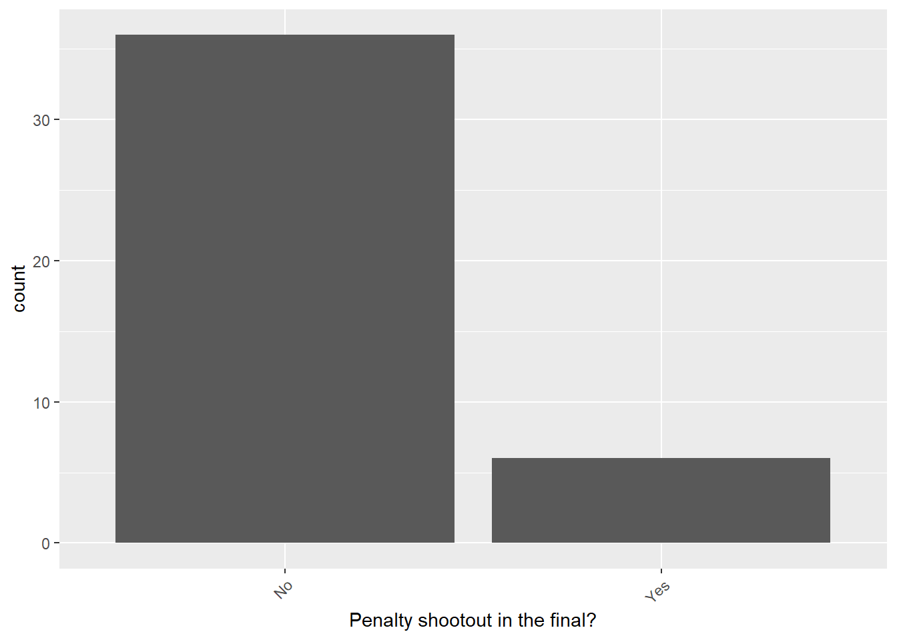
A strong majority says no, but the possibility remains.
Will England have a goal disallowed by VAR? [Decided]
Phil Foden was far enough offside that the linesman would have spotted it, but VAR decided to take a look anyway. The goal was disallowed, and a majority gained points.
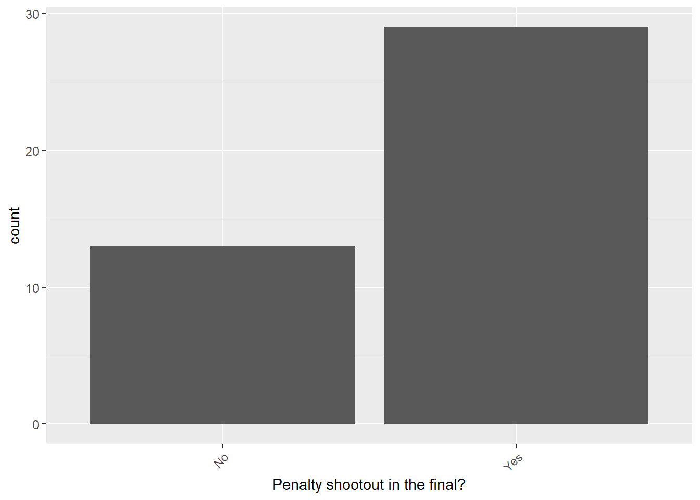
During the Euros: Will Florian Wirtz start a game on the bench? [Decided]
Florian Wirtz was benched in the game against Denmark, so a majority again gained points. Our collective wisdom is often impressive.
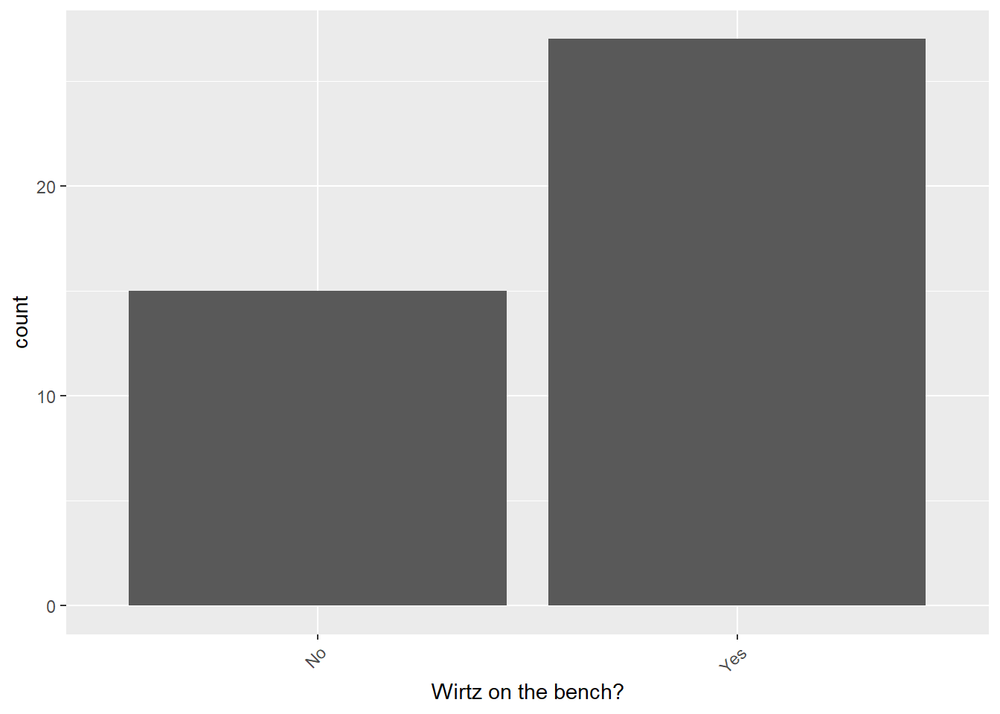
What will be the average age of the Denmark starting 11 in the first match? [Decided]
This question has also been answered. A large majority gained points.
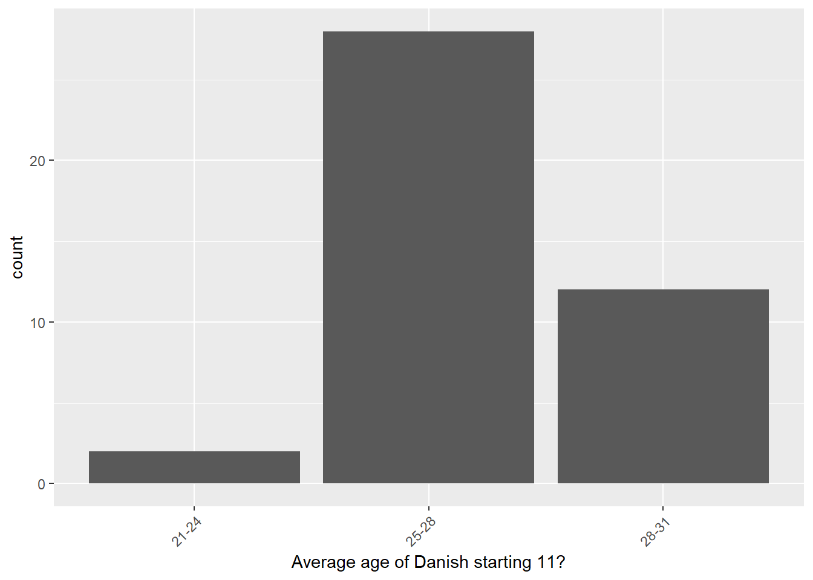
Oh Harry!
While I miss Harry Maguire, I am happy to see Marc Guéhi fill the void. A near red card experience yesterday and a total gaffe resulting in Slovakia’s goal, but also a yellow card that suspends him for the next game.
Who will be the youngest Goalscorer in the tournament?
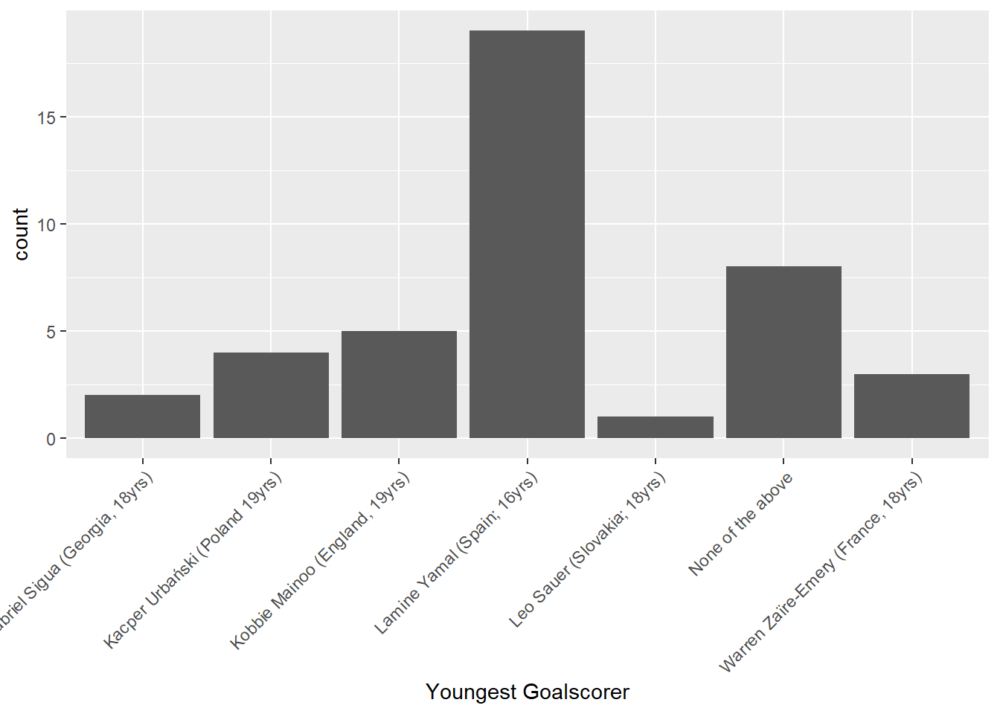
None of the above is currently the correct answer, but Mainoo and Yamal looks like they might just get a goal.
Who will be the oldest Goalscorer in the tournament?
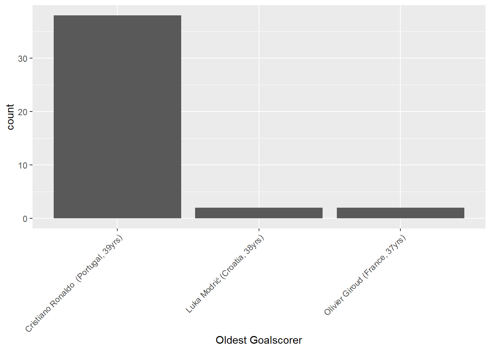
As it stands, it is Luka Modric, but Ronaldo is still in the tournament. Jan Erling & Vilde are currently receiving points for this question.
How many goals will be scored in the tournament?
New names:
Attaching package: 'plotly'
The following object is masked from 'package:igraph':
groups
The following object is masked from 'package:ggplot2':
last_plot
The following object is masked from 'package:stats':
filter
The following object is masked from 'package:graphics':
layout
• `` -> `...1`The championship started with a 6 goal game, which caused the black line representing the actual number of goals to enter on a high note. Yet, our collective wisdome is almost stunnigly precise.
At the time of writin, there has been 93 goals in the tournament. This is the exact estimate of Jenny and Hedda, and they stand to win the points right now. However, 10 participants are within 4 goals of the actual number, so the excitement will remain to the end.